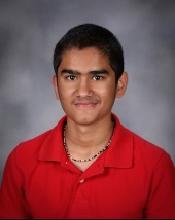

About Me - Ambareesh

People tend to exert significant effort when grappling with unfamiliar and less enjoyable concepts, but enthusiasm makes learning feel effortless. Personally, I choose pursuits that genuinely interest me, allowing me to navigate challenges with ease. This approach extends to my educational choices, where I prioritize classes that captivate my interest. My strategy involves gradually working my way towards attending a 4-year college and pursuing medical school to achieve my goal of becoming a Pediatrician, a profession heavily centered on interacting with children. Over the past two years, I've gained valuable experience teaching various instruments to students.
Becoming a pediatrician demands a diverse skill set, encompassing qualities such as tolerance, effective communication, and both mental and physical aptitude. My journey has equipped me with these skills through volunteer work at ISKCON Silicon Valley, where I've been actively involved for four years. At the Hindu temple, I engage with new community members, facilitating their integration into the regular community. This role demands respectful communication, especially as many new members are older than me.
In addition to my volunteer work, I've spent two years professionally teaching kids various instruments, catering to age groups from 5 to 14. This experience has honed my ability to communicate effectively with children, manage groups, and constructively contribute to a team environment. I've dedicated significant time to mathematical pursuits, investing 30-40 hours weekly in and outside of school. This commitment extends to participating in International Math Olympiads.
Throughout my diverse experiences, including my immersion in mathematics, I've embraced every opportunity presented to me. These experiences collectively shaped the qualities I possess today. I appreciate your time and consideration.